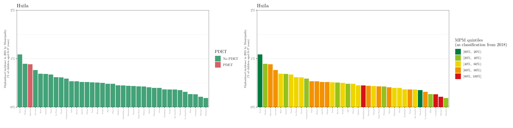
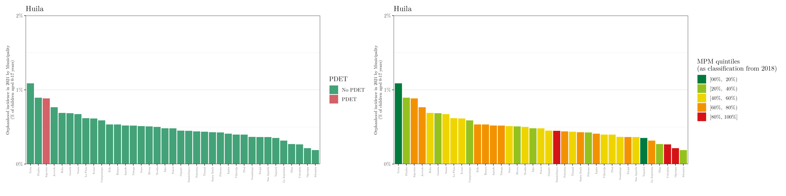

Orphanhood in Colombia
Overview
The 32 departments and one capital district (Bogotá) can be grouped together into the 6 regions of Colombia (right panel), namely, (1) Caribe, (2) Eje cafetero y Antioquia, (3) Pacífica, (4) Central, (5) Llanos, and (6) Amazonía.
Colombia can still be divided into 1121 municipalities (this classification varies along the years, and we are using the definition from 2021).
 |
 |
As a way to exclude unreliable regions, we are not considering the 29 municipalities with the lowest population density. The threshold was set based on the following plot (notice that the Population density is in the log-scale). Locations with low population density present, in general, low death rate—indicating that there might be some underreporting issues on these municipalities. Also, we aimed to have at least one municipality in each department.

Aiming to check where these municipalities should be located, we can plot the population density map. As we can see from the following image, almost all low-populated areas are in the south/south-east region (which is known to be a jungle area).
Colombia municipalities classification
The Colombia municipalities can be categorized by the Programas de Desarrollo con Enfoque Territorial, PDET (left map) or based on a multidimensional poverty index (right map), named “Medida de pobreza multidimensional de fuente censal en el total del municipio (MPM).”
Remark 1: the PDET includes 170 municipalities (in our case, 165—after excluding the municipalities with low population density) that were prioritized as the territories most affected by armed conflict, with higher levels of poverty, presence of illicit economies, and institutional weakness.
Remark 2: when analyzing the poverty index, in order to have balanced classes, we ordered the municipalities based on the MPM, and divided them into 5 quintiles (namely, [00%, 20%), [20%, 40%), [60%, 80%), and [80%, 100%])—and that is the classification we will use from now on.
Remark 3: all maps already exclude the 29 low-populated municipalities.
 |
Fertility and mortality rates
The first thing we can analyze is the death and fertility rates in 2021 (averaged over gender and age group). The following plots show the death (left map) and fertility (right map) group by quintile; i.e., ordered.
Firstly, let us plot the rates for all locations; i.e., without excluding the municipalities with low population density.
From the above maps, we can notice that the death rates seem to be lower in the south/south-east municipalities, while the fertility rates in the same regions are higher. This is not what we would expect, as the mortality rates in the Amazonía region are expected to the hightes—indicating there is a problem of underreporting.
Secondly, let us plot the rates for 1092 (\(1121 - 29\)) municipalities, i.e., after excluding the locations with low population density. It is worth noting that the municipalities had to be re-ordered/re-classified after excluding the 29 locations.
Now, let us take it one step further and standardize the rates based on the population data from 2018 (census year). That is, we will rank the rates based on the reference population, assuming the age-specific rates are as observed. The following maps show such standardized rates in 2021 (based on the quintiles), similarly to before.
We can also analyze these rates grouped by age and the PDET or MPM classifications. The plots below show these estimates for 2021 considering only the 1092 (\(1121 - 29\)) municipalities with high population density.
Remark: all boxplots are defined based on the \(2.5^{\text{th}}\), \(25^{\text{th}}\), \(50^{\text{th}}\), \(75^{\text{th}}\), and \(97.5^{\text{th}}\) percentiles (with no outliers).
PDET

MPM (or poverty index)

Orphanhood estimates
Main estimates
The following table shows the orphanhood prevalence and incidence estimates in 2021 (“total” and “% of children aged 0-17 years”) at the national, regional, and department levels.
Remark: the locations flagged with an asterisk symbol \((*)\) have missing municipalities (as discussed before, municipalities with low population density). In these cases, the estimates are lower bounds of the true values.
These are the orphanhood prevalence estimates in 2021 (total and %) for all departments, stratified by regions.

These are the orphanhood incidence estimates (in %) in 2021 by municipality (per 1,000 children aged 0-17 years).

Similarly, these are the orphanhood incidence estimates (COUNTS) in 2021 by municipality.
Complementary, the plots below show the estimated orphanhood incidence in 2021 (in %) for all analyzed municipalities (i.e., municipalities with population density below the set threshold) grouped by department and classified according to the PDET and MPM.


 
 


Estimates grouped by PDET or MPM
As mentioned before, the municipalities can be grouped based on the PDET and MPM classifications. The following images show the distribution of the orphanhood incidence estimates (in %) by municipalities in 2021 stratified by gender and PDET or MPM.
Remark: As before, all boxplots are defined based on the \(2.5^{\text{th}}\), \(25^{\text{th}}\), \(50^{\text{th}}\), \(75^{\text{th}}\), and \(97.5^{\text{th}}\) percentiles (with no outliers). The red circle represents the mean.
PDET
MPM (or poverty index)
Complementary tables
Department, Region, and National
The following table shows the orphanhood prevalence and incidence estimates in 2021 (“total” and “% of children aged 0-17 years”) of children who lost their mother, father, or both, at the national, regional, and department levels.
Remark: as before, the locations flagged with an asterisk symbol \((*)\) have missing municipalities. In these cases, the estimates are lower bounds of the true values.
Municipality
The following tables show the orphanhood and incidence estimates in 2021 (“total” and “% of children aged 0-17 years”) of children who lost their mother, father, or both, at the municipality level.